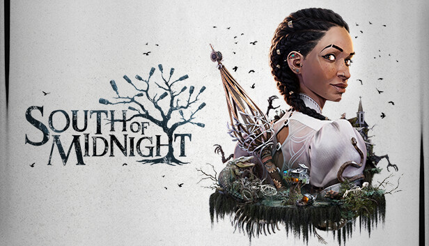
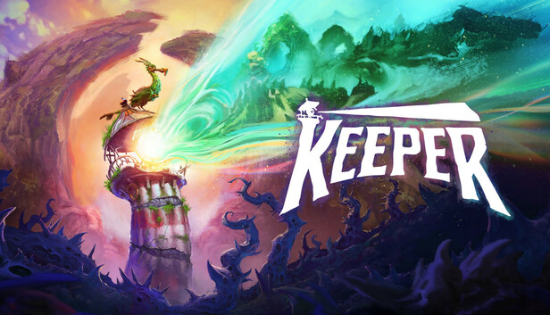
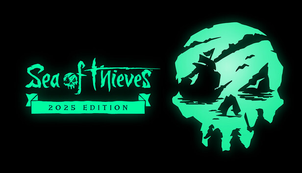
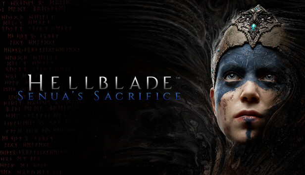
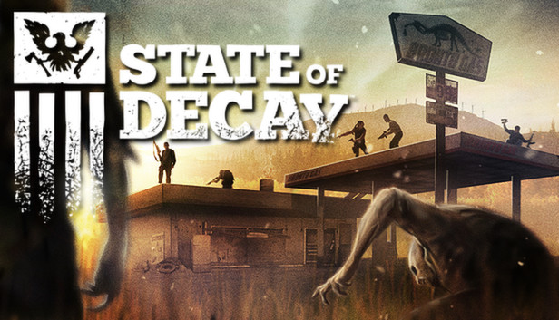

I prossimi studi che Xbox chiuderà
NB: Si tratta esclusivamente di ipotesi sul futuro di Xbox, nulla di confermato.
Per il momento, non sono state annunciate ulteriori chiusure.
Lo stato attuale
Solo quest'anno, gli studi di Xbox hanno rilasciato circa sei giochi, più altri due in arrivo nei prossimi giorni.Si tratta di:
- Avowed (Obsidian Entertainment)
- South of Midnight (Compulsion Games)
- DOOM: The Dark Ages (id Software)
- Tony Hawk's Pro Skater 3+4 (Activision)
- Keeper (Double Fine Productions)
- The Outer Worlds 2 (Obsidian Entertainment)
- Call of Duty: Black Ops 7 (Activision)
Normalmente, si crederebbe che con un tale ammontare di studi e dunque giochi in uscita, Xbox stia crescendo sempre più in ogni aspetto.
Tuttavia, solo alcuni di questi hanno totalizzato un numero di vendite soddisfacente, il che potrebbe portare Microsoft a chiudere alcuni studi.
Il modello di Game Pass, attualmente, funziona solamente se i nuovi giochi portano nuovi abbonati, e i costi di sviluppo non vengono recuperati solamente grazie ad esso.
Ricordiamo, inoltre, che l'anno scorso avevano chiuso lo studio di Hi-Fi Rush, nonostante fosse stato accolto molto bene dai giocatori e della critica.
Perciò, è bene tenere a mente che non è a rischio solo chi ha pubblicato un "flop", ma anche chi ha appena pubblicato un gioco e necessita di altri anni di sviluppo.
Come si suol dire, il tempo è denaro (almeno secondo Microsoft), e gli sviluppatori costano.
Chiusure probabili
Xbox ha a disposizione più di trenta studi, ma fortunatamente abbiamo una mezza idea di cosa ognuno stia facendo in questo momento, e da questo possiamo trarre alcune conclusioni.-
Compulsion Games (Contrast, We Happy Few, South of Midnight)

Compulsion Games ha da poco rilasciato South of Midnight, un gioco di avventura 3D, su Xbox Series X|S e PC.
Il gioco è stato criticato da alcuni giocatori fin dal suo reveal, a causa di "contenuti woke", e nonostante le valutazioni positive su Steam, non è stato un successo commerciale.
Non solo questo, ma non era ciò che si aspettavano dagli sviluppatori di giochi "dark" come Contrast e We Happy Few.
Lo sviluppo del gioco ha richiesto circa sette anni, ed è improbabile che Microsoft vorrà continuare a finanziare lo studio data la sua inefficienza, a meno che l'inevitabile versione PS5 di South of Midnight svolti la situazione.
È inoltre difficile che stiano lavorando a più progetti contemporaneamente, considerando il basso numero di impiegati. -
Double Fine Productions (Psychonauts, Brütal Legend, Broken Age, Keeper...)

Nonostante sia diventato uno studio amato nel tempo, grazie a giochi particolari come Psychonauts e Brütal Legend, nessuno di questi è un "system seller".
Dall'acquisizione nel 2019, lo studio ha pubblicato solamente un gioco esclusivo per Xbox, ossia Keeper.
Questo perché l'atteso sequel Psychonauts 2, rilasciato nel 2021, fu finanziato tramite una campagna di crowdfunding la quale promise agli investitori una copia del gioco per PS4.
Le valutazioni di Keeper sono positive, ma le vendite sono state realmente atroci, a causa del tipo di gameplay e dell'assenza totale di marketing.
Sappiamo che lo studio sta sviluppando più giochi contemporaneamente grazie a delle interviste, ma siamo anche a conoscenza del fatto che nessuno di essi sarà un sequel: saranno tutte nuove IP.
Quest'ultima potrebbe rivelarsi una mossa alquanto pericolosa: recentemente Xbox ha realizzato che non conviene più investire in nuove IP, bensì concentrarsi sui franchise di successo come Forza Horizon, Fallout e Call of Duty. -
Rare (Banjo-Kazooie, Killer Instinct, Perfect Dark, Sea of Thieves...)

Quella di Rare fu una delle prime acquisizioni da parte di Microsoft riguardanti il mondo videoludico.
Il presunto motivo fu... per possedere l'IP di Donkey Kong, dati i giochi riguardanti la serie sviluppati da Rare, solo per poi realizzare che non fu così.
In seguito all'acquisizione, vari appassionati dei giochi di Rare iniziarono a credere che "non si trattava più della stessa Rare".
Lo studio continuò a pubblicare giochi su piattaforme Nintendo, ma sviluppò anche alcune esclusive per Xbox ed Xbox 360.
Nelle ultime due generazioni, però, gli unici nuovi giochi rilasciati da Rare sono stati Killer Instinct nel 2013, e Sea of Thieves nel 2018.
Quest'ultimo è un cosiddetto GAAS, o Game-As-A-Service, ossia una tipologia di giochi che vengono aggiornati costantemente nel tempo con nuovi contenuti, spesso con modalità multiplayer e microtransazioni.
Il gioco viene ancora aggiornato tuttora, ma... per quanto ancora lo sarà? Sono passati sette anni, e il numero di giocatori cala sempre più col tempo.
Data la quantità di funzionalità aggiunta dai numerosi aggiornamenti, è difficile credere che esisterà mai un "Sea of Thieves 2".
Fino a pochi mesi fa, Rare aveva un nuovo gioco in sviluppo, "Everwild", ma è stato cancellato a causa della mancanza di progressi significativi negli anni.
Se non dovesse avere un secondo gioco in sviluppo oltre a Everwild, Rare si troverebbe in una situazione molto difficile, e Xbox potrebbe decidere di chiudere lo studio piuttosto che concedere loro altri anni di sviluppo per qualcosa che potrebbe essere nuovamente cancellato.
Chiusure possibili
Questi studi non sono a rischio attualmente, ma potrebbero essere comunque chiusi in qualunque momento.-
Ninja Theory (Hellblade)

Lo studio ha rilasciato Hellblade 2: Senua's Saga lo scorso anno su Xbox Series X|S e PC, con un porting PS5 recentemente rilasciato.
Nonostante la fidelità grafica di quest'ultimo, il gioco è estremamente lineare, dalla poca rigiocabilità, e persino dalla breve durata.
Le vendite sono state mediocri, parzialmente a causa dell'attesa di sette anni tra il primo gioco (inizialmente un'esclusiva PS4) e il suo sequel.
Nonostante ciò, Ninja Theory è uno studio specializzato in motion capture, e il loro prossimo gioco, Project: Mara, fu annunciato già nel 2020. -
Undead Labs (State of Decay)

State of Decay 3 fu annunciato nel 2020, ma nonostante sia il sequel di un sequel, cinque anni dopo non abbiamo ancora una finestra di rilascio.
Inoltre, si parla di uno sviluppo travagliato in un ambiente tossico, con accuse anche di sessismo e molestie.
Il gioco potrebbe essere rilasciato nel 2026, ma se non fosse il caso... Xbox potrebbe decidere di non concedere loro altro tempo.
Conclusione
Secondo i fatti alla mano, cinque studi potrebbero essere chiusi in futuro, soprattutto considerando i licenziamenti di massa, che non smetteranno nemmeno l'anno prossimo da quanto si vocifera.Quel che possiamo fare per evitarlo è supportare gli studi, o quantomeno quelli "che ci interessano", per tentare di salvaguardarli da una Microsoft Gaming che esige sempre più ricavi.
Xbox disse di aver imparato la lezione dopo la chiusura di Lionhead Studios (Fable) nel 2016, ma è evidente che non valga lo stesso per Microsoft.